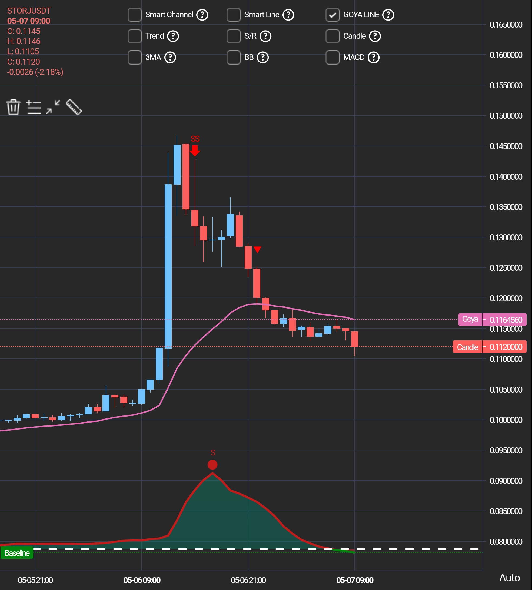
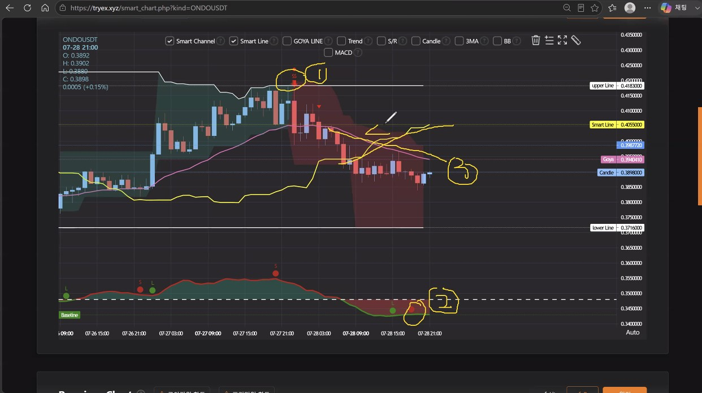

첫 접속부터 매매 실행까지, 순서만 따라하면 됩니다.
고야차트 시그널 알람과 OKX 거래소를 한 번에 연결하는 가장 쉬운 방법.
고야차트와 연동되어 시그널 확인 → 거래 실행까지 한 번에 끝내는 시그널 매매 특화 플랫폼
고야차트의 유스메타(YouthMeta) 매매 시그널을 ▲Long / ▼Short로 즉시 확인하고, confirmed / unconfirmed 상태까지 제공합니다.
차트를 보다가 바로 Trade Now 버튼을 눌러 거래소로 이동, 시그널 분석 결과에 맞춰 주문까지 한 흐름으로 실행합니다.
현재 보유 중인 포지션이 시그널 방향과 다르면 경고 표시가 떠서, 불필요한 역방향 손실을 미리 막아줍니다.
연동 후 거래만 해도 USDT · ICX 지급 이벤트가 준비되어 있습니다. 아래 이벤트 섹션에서 확인하세요.
수퍼사이클의 모든 알람 기능을 제한 없이 사용할 수 있습니다. Long / Short 시그널과 반대 방향 경고가 모두 제공됩니다.
이 경우 반대 시그널 알람만 제공됩니다. 빠짐없는 시그널 이용을 원한다면 알람 패키지 구독을 권장합니다.
수퍼사이클은 반드시 EX 로그인 후 고야차트에 접속하여,
리스트 상단의 【Trade Now】 버튼을 클릭하여 연동해야 정상 작동합니다.
아래 순서대로 따라하면 약 10분이면 세팅이 끝납니다
수퍼사이클 앱은 모바일 웹에서 바로 사용할 수 있습니다.
시그널을 실제 매매로 잇는 가장 중요한 연결 작업입니다.
okx.com 웹사이트에 직접 접속Remove (삭제)시그널을 놓치지 않도록 알람을 켜고, 이용 중인 플랜에 맞춰 설정합니다.
아래 버튼을 눌러 시그널이 들어왔을 때의 흐름을 체험해보세요
매매하고 싶은 종목을 등록해두면 이후 관리가 훨씬 편해집니다.
마지막 단계! 시그널을 보고 조건을 설정한 뒤 주문을 실행합니다.
고야차트(Goya Chart)에서 실제로 표시된 시그널 사례입니다. 이미지를 눌러 확대해서 확인하세요

GOYA LINE 상단에서 SS 숏 시그널

Smart Line(0.4355) 위에서 SS 시그널(①)이 발생한 뒤, 캔들이 Smart Line을 이탈(②)하면서 추세가 하락으로 전환된 사례. 시그널 + 라인 이탈을 조합해 진입 타이밍을 잡는 전형적인 흐름입니다.
아래 항목을 모두 체크하면 준비 완료! (체크 기록은 자동 저장됩니다)
체크 항목을 눌러 표시해보세요
연동만 해도, 거래만 해도 선물이 쏟아집니다
okx.com 접속 → 로그인 → Third-party authorization (PortX) → 기존 키 Remove 후 앱에서 다시 연동하면 해결됩니다.